This workshop guides you to configuring a Simple Demo Org (SDO) with Data 360 and Marketing Cloud Advanced Edition.
Request a Simple Demo Org
- Login to Partner Community.
- Click the Learn tab.
- Click Start Learning in the Partner Learning Camp tile.
- Click the Demo Org tab.
- Select SDO from the Demo Type menu.
- Agree to the Master Subscription Agreement.
- Click Submit.
Note
It may take up to an hour to complete the SDO provisioning process. Wait until you recieve an activation email before proceeding.
Activate Your SDO
- Check your email inbox for an activation email.
- To avoid potential conflicts with an existing Salesforce org browser session, copy the URL provided in the email and paste the URL in an incognito browser window.
- Follow the instructions to set new password and security question.
- Click Change Password.
- Log in to the new SDO with your username provided in the activation email and new password.
Setup User Permission Sets
- Click on the icon from the top setup menu and click the first Setup menu item.
- In the quick find field, enter and select Users from the Users menu.
Users - Select Active Users from the View menu.
- Locate the row with your user account and click on your name.
- Click Permission Set Assignments from the top menu to locate the Permission Set Assignments section.
- Click Edit Assignments.
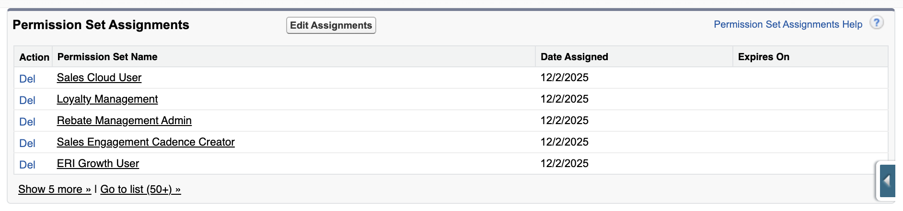
- From the Available Permission Sets list, select Data Cloud Admin then click Add
. - From the Available Permission Sets list, select Marketing Cloud Admin then click Add
. - Click Save.
- If you are prompted that the selected permission sets include community settings, click OK.
Setup Data Cloud
- Click the icon from the top setup menu and select Data Cloud Setup.
- Click Get Started from the Data Cloud Setup Home page.

- Once the setup process is complete, your Home Org details will appear on the Data Cloud Setup Home page.

Note
It may take up to an hour for the automated Data Cloud Instance setup process to complete. You will not be able to complete additional setup tasks until this process has completed.
Enable Marketing Cloud
- Click on the icon from the top setup menu and click the first Setup menu item.
- In the Setup quick find field, enter and select Basic Settings from the Marketing Cloud > Assisted Setup menu.
Basic Settings - In the Select a Data Space section, select the default Data Space and click Confirm, then click Confirm again when prompted.
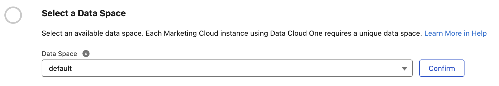
- The Marketing Cloud enablement process will begin automatically.
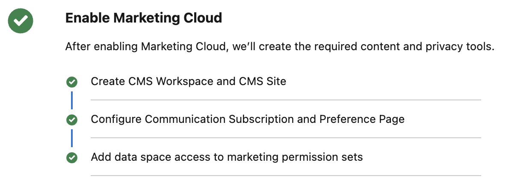
Install Marketing Cloud Data Kits
Marketing Cloud Data Kits provide the objects, fields, and data connections that power Agentforce Marketing. Follow the steps below to install the required data kits.
- From the Basic Settings page, click Install in the Install the Marketing Data Kits section.
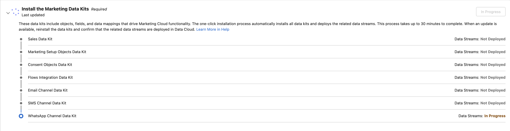
- Once deployment is complete, each data kit should display a Deployed status.
Note
The installation will take a few minutes to complete. If an error appears, click
Create an Identity Resolution Ruleset
Identity resolution rulesets define the match and reconciliation logic that Data 360 uses to connect multiple data sources and create a unified profile of an individual. The resulting unified profiles are stored in data model objects (DMOs) generated by the ruleset. In Agentforce Marketing, messages are sent to unified individuals. Follow the steps below to create an identity resolution ruleset.
- Search and select from App Launcher
Identity Resolutions. - Click New.
- Select the Create New Ruleset tile and click Next.
- When prompted in the New Ruleset dialog, select the following details:
- Data Space: default
- Primary Data Model Object: Individual
- Match to Data Model Object: Individual
- Ruleset ID: leave blank
- Click Next.
- Enter in the Ruleset Name field.
Unified Individuals - Click Save.
Create Match Rule
Match rules tell Data 360 which profiles to unify during the identity resolution process. Each match rule contains one or more criteria. Profiles are matched when all criteria within a match rule are satisfied. In this exercise, you will create a custom match rule.
- Click Configure in the Match Rules panel.
- Click Next.
- Click Configure.
- Select Custom Rule.
- Click Next.
- Choose the following criteria:
- Match Rule Name:
Custom Rule - Data Model Object: Individual
- Field: First Name
- Match Method: Fuzzy - Medium Precision
- Match Rule Name:
- Click
Add Criteria. - Choose the following criteria:
- Data Model Object: Individual
- Field: Last Name
- Match Method: Exact
- Click
Add Criteria. - Data Model Object: Contact Point Email
- Field: Email Address
- Match Method: Exact Normalized
- Confirm the criteria matches the screenshot below.
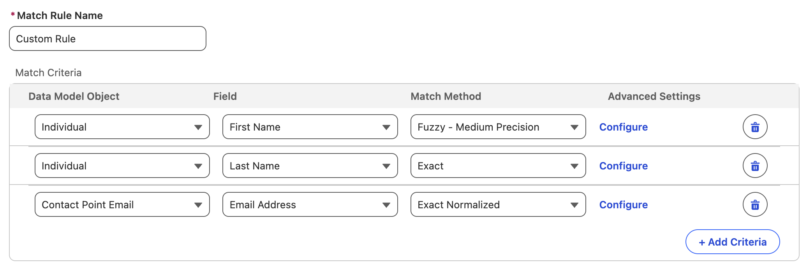
- Click Next.
- Click Save.
Create Reconcilation Rule
A reconciliation rule specifies how to select a single value to save to a unified field that can’t have multiple values, such as an individual’s name, during the identity resolution process. In this exercise, you will define a rule for reconciling contact, lead and prospect records.
- Expand
Individual in the Reconciliation Rules panel. - Click the
pencil icon for the Default Reconciliation Rule. - Select Source Priority in the Default Reconciliation Rule menu.
- Reorder the rules to the following sort order:
- Contact_Home
- Lead_Home
- Prospect_Home
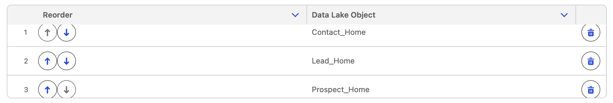
- Click Save.
Update Company Information
To meet regulatory compliance requirements, all marketing emails must include a valid physical address. In this exercise, you’ll configure the physical address that will be automatically inserted into your email content using the Physical Address merge tag.
- Click on the icon from the top setup menu and click the first Setup menu item.
- In the quick find field, enter and select Company Information from the Company Settings menu.
Company Information - Click Edit.
- Add values for the following fields:
- Street
- City
- State/Province
- Zip/Postal Code
- Country
- Click Save.
Enable Agentforce
- Search for from the Setup quick find menu and select Einstein Setup.
Einstein Setup - Toggle Turn on Einstein to On.
- Below the Prompt Builder Settings section, toggle Global Languages and Deploy Prompt Templates options to On.
- In the quick find field, enter and select Agentforce Agents from the Agentforce Studio menu.
Agentforce Agents - Toggle Agentforce to On.
- Toggle Enable the Agentforce (Default) Agent to On.
- Wait for the Agent table to appear at the bottom of the page.
- Click the arrow icon
in the Agentforce (Default) row and select Open in Builder.
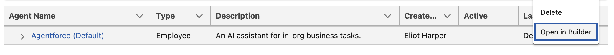
- In the Topics menu click New
and choose Add from Asset Library. - Enter in the search topics field and select the checkbox next to Marketing Cloud: Campaign Planning.
Marketing - Enter in the search topics field and select the checkbox next to Content Creation.
Content - Click Finish.
- Confirm that both the 'Content Creation' and 'Marketing Cloud: Campaign Planning' topics appear in the list.
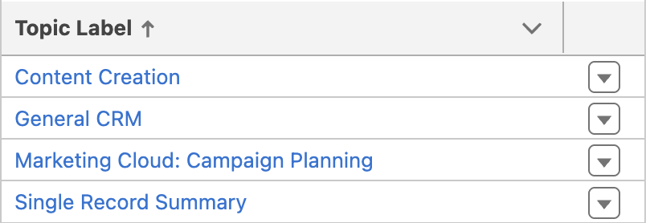
- Click Activate.
- Click Ignore & Activate when prompted about configuration issues.
- Click the back arrow
in the top left corner of the page to return to Setup. - Click Leave if prompted that changes you made may not be saved.
Enable Einstein Segment Creation
- In the quick find field, enter and select Agentforce & Gen AI from the Einstein & Agentforce menu.
Agentforce - In the Activate Einstein Segment Creation section, click Go to Feature Manager.
- Locate the Einstein Segment Creation feature and click Enable.
- Click Enable when prompted in the dialog.
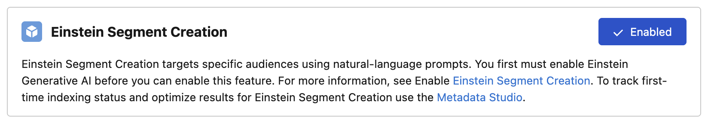
Enable Einstein Send Time Optimization
- In the quick find field, enter and select Email from the Marketing Cloud Channels menu.
Assisted Setup
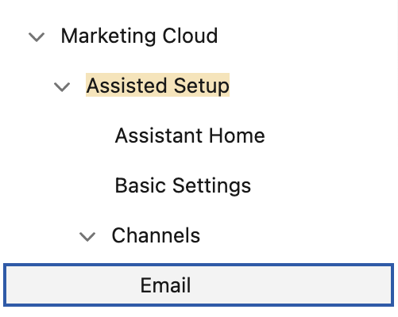
- In the Optional Setup section, locate the Activate Einstein Send Time Optimization section, then click Go to Einstein Settings.
- In the Enable with your org-specific data section, click Enable.
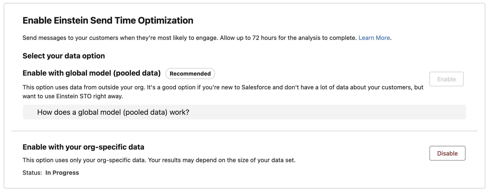
Note
This process can take up to 48 hours to complete, but you can continue working through the remaining setup exercises and workshops in the meantime.
Create a Data Graph
A data graph brings together structured data from your Data Model Objects (DMOs) in Data 360 and assembles them into an easy-to-use, unified view. These graphs power personalisation in Agentforce Marketing and are also used at send-time to determine the correct contact point for each individual.
In this exercise, you’ll create a data graph that includes required attributes for sending messages.
Important
When configuring a data graph for Agentforce Marketing, you must include the required contact point attributes to ensure emails can be sent successfully. Refer to the guidance in Salesforce Help. If a contact point cannot be resolved from the data graph, then contact point values from Contact Point DMOs (related to the Individual) are used.
- Select the Data Graphs tab from the Data Cloud app.
- Click New.
- Leave the Start from Scratch tile selected, then click Next.
- Select the Real-Time Data Graph tile, then click Next.
- Enter the value in the Data Graph Name field.
Profile - Leave the default option selected in the Data Space menu.
- Select Unified Individual RT from the Primary Data Model Object menu.
- Click Next.
- Keep the default settings selected in Real-Time Consumption Limits and click Next.
- In the Unified Indvidual RT Fields list, select the following fields:
- First Name
- Last Name
- In the Data Model Objects tree, click the
icon next to Unified Individual RT (Primary Data Model Object). - In the Data Model Objects tree, click the
icon next to Unified Individual (Primary Data Model Object). - Select Unified Link Individual.
- Click the
icon next to Unified Link Individual. - Select Individual.
- In the Fields list, select the Created Date field.
- Click the
icon next to Individual. - Select Contact Point Email then select Email Address from the fields list.
- Click the
icon next to Individual. - Select Contact Point Phone then select Telephone Number from the fields list.
- Confirm the data graph structure and field count matches the screenshot below.
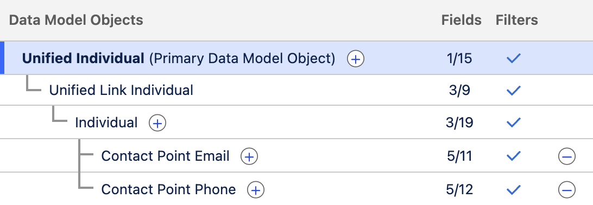
- Click Save and Build.
- In the Refresh Schedule modal, open the Select a Refresh Interval menu and choose Daily.
- Click Save and Build.
Contact Point Deduplication
If multiple unified individuals share the same contact point value — for example, the same email address returned in a segment — the platform automatically de-duplicates them. In these cases, the individual with the most recent Created Date is retained as the segment member.
Set Default Data Graph
Next, define the default data graph used for sending messages. This setting can be overridden at the email level by selecting a different data graph as the data source.
- Click on the icon from the top setup menu and click the first Setup menu item.
- In the quick find field, enter and select Customer Engagement from the Reporting and Optimization menu.
Customer Engagement - In the Configure Basic Personalization section, select Profile from the Data Graph menu.
- In the Update data graph modal, click Update.